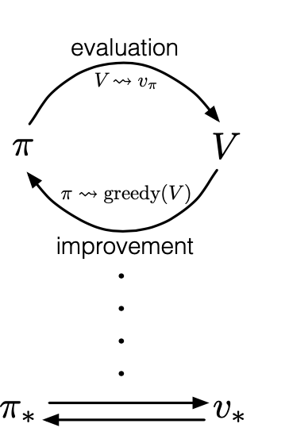
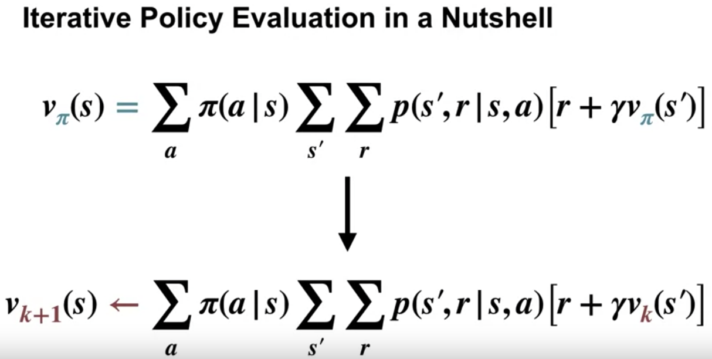

Reinforcement Learning Day 4 (Policy Evaluation)
- Abstract
- Policy Evaluation
- Policy Improvement
- Policy Iteration
- Value Iteration
- Asynchronous Dynamic Programming
- Generalized Policy Iteration
- Effciency of Dynamic Programming
- Summary
- Policy Evaluation vs. Control
- Iterative Policy Evaluation
- Policy Improvement
- Policy Iteration
- Flexibility of the Policy Iteration Framework
- Efficiency of Dynamic Programming
- Approximate Dynamic Programming for Fleet Management
Abstract
As we shall see, DP algorithms are obtained by turning Bellman equations such as these into assignments, that is, into update rules for improving approximations of the desired value functions.
Polciy Evaluation
policy evaluation: compute the state-value function for an arbitrary policy $\pi$
Indeed, the sequence ${v_k}$ can be shown in general to converge to $v_{\pi}$ as $k \rightarrow \infty$ under the same conditions that guarantee the existence of $v_\pi$. This algorithm is called iterative policy evaluation.
successor => afterwards
Policy Improvement
Let see this formula $q_\pi(s,a) = q_\pi(s,\pi’(s)) >= v_\pi(s)$
Then the policy $\pi’$ must be as good as, or better than, $\pi$.
if there is strict inequality of this formula at any state, then there must be strict inequality of $v_\pi’(s) > v_\pi(s)$ at that state.
Thus, It is a natural extension to consider changes at all states, selecting at each state the action that appears best according to $q_\pi(s,a)$. In other words, to consider the new greedy policy, $\pi’$, given by choose the argmax of state action value function.
By construction, the greedy policy meets the conditions of the policy improvement theorem (4.7), so we know that it is as good as, or better than, the original policy. The process of making a new policy that improves on an original policy, by making it greedy with respect to the value function of
the original policy, is called policy improvement.
Policy Iteration
Once a policy, $\pi$, has been improved using $\pi$ to yield a better policy, $\pi’$, we can then compute $\pi’$ and improve it again to yield an even better $\pi’’$.
Value Iteration
We can update value function directly instead of update vlaue function, update policy.
I consider, it’s a simple idea. But sutton still show use a complex and redudant policy evaluation, improvement, iteration. It’s easy to think, if we can constrcut $v$ to $\pi$, can we update $v$ and let it converge to $v*$?
Asynchronous Dynamic Programming
Asynchronous DP algorithms are in-place iterative DP algorithms that are not organized in terms of systematic sweeps of the state set.
Of course, avoiding sweeps does not necessarily mean that we can get away with less computation. It just means that an algorithm does not need to get locked into any hopelessly long sweep before it can make progress improving a policy.
Generalized Policy Iteration
Almost all reinforcement
learning methods are well described as GPI.

Making the policy greedy with respect to the value function typically makes the value function incorrect for the changed policy, and making the value function consistent with the policy typically causes that policy no longer to be greedy. In the long run, however, these two processes interact to find a single joint solution: the optimal value function and an
optimal policy.
Effciency of Dynamic Programming
But linear programming methods become impractical at a much smaller number of states than do DP methods (by a factor of about 100). For the largest problems, only DP methods are feasible.
Summary
Finally, we note one last special property of DP methods. All of them update estimates of the values of states based on estimates of the values of successor states. That is, they update estimates on the basis of other estimates. We call this general idea bootstrapping.
Policy Evaluation vs. Control
Control is the task of improving a policy.
Iterative Policy Evaluation
We can turn the bellman equations into an update rule, to iteratively compute value functions

Policy Improvement
I have a question: If the $q(s,\pi’(s)) > q(s, \pi(s))$ in some state, but in other states, the $\pi$ is better, but if we update part of action policy from $\pi’$ to $pi$, the following all choices will be affected. Shall we still perform updates? (Does these scenarios still satisfy MDP?)
The summary told me the greedy for $v_\pi$ is better or equal to the original policy. But maybe some actions as described above may affect results?
Because v represent the long term rewards, so it still will be the better policy after upadting?
Polciy Iteration
Combine Policy improvement and iteration
Flexibility of the Policy Iteration Framework
Each policy improvement step makes our policy a little more greedy, but not totally greedy. Intuitively, this process should still make progress towards the optimal policy and value function. In fact, the theory tells us the same thing. We will use the term generalized policy iteration to refer to all the ways we can interleave policy evaluation and policy improvement.
The maximum choice for value function in each step and value iteration is one type of avoding full sweeps. We call this Asynchronous dynamic programming.
Efficiency of Dynamic Programming
Monte Carlo method calculate the average of the state action. And the DP tell me we can use the value we have compute so hard.
Approximate Dynamic Programming for Fleet Management
It looks like the prof has two overlap DP problem. And one can sove with LP and the driver’s value can be solved by DP equations.